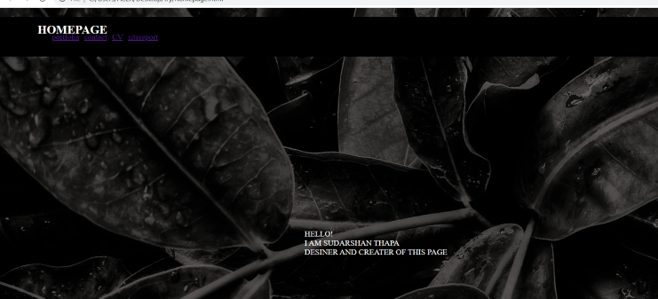
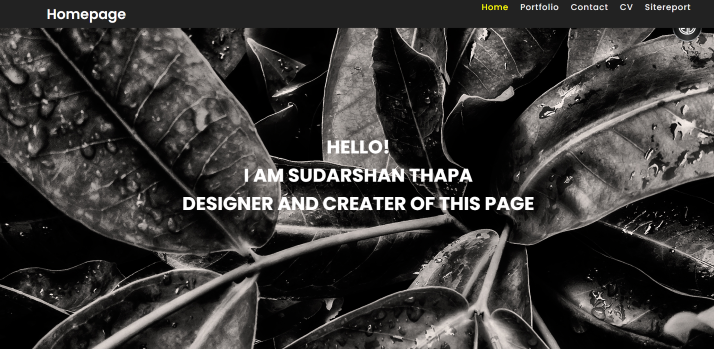
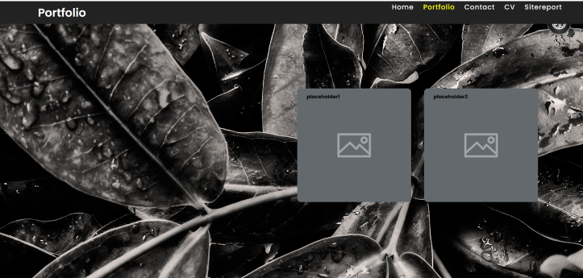
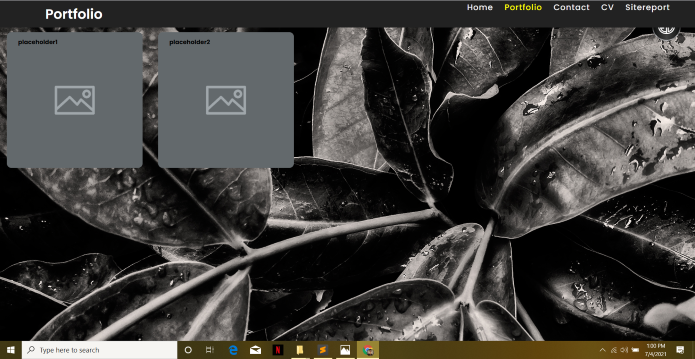
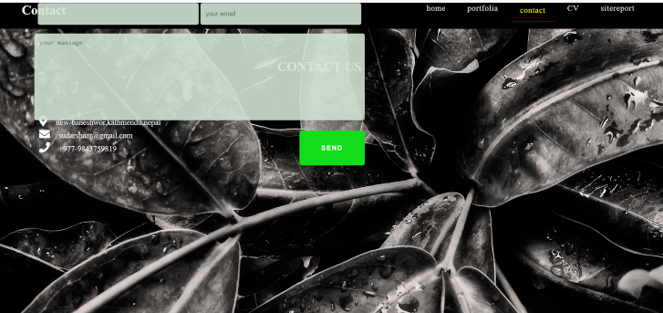
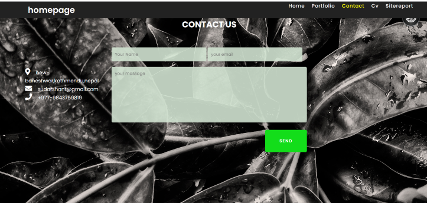
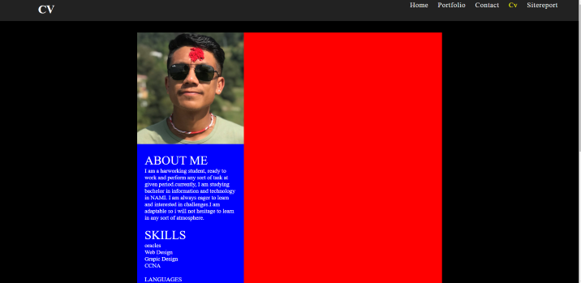
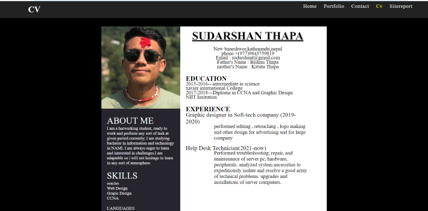

introduction
My name is Sudarshan Thapa, and I’m a student of NAMI college.For this assignment my university has asked me to develop a portfolio website.By making my assignment work it will allow me to create a website which will help me to build and understand the structure of building website.
After joining NAMI college,I got experience of learning the basics of web development, coding, designing in first semister of term 1 which help me a lot for making website and also got knowledge about building website.NAMI college have gave me opportunity to learn all the basics from starting level which helped me a lot for learning and understanding courses. Throughout my learning i had many problems and dufficulties in understanding html and css where my teacher Mr. Ankit Thapa helped me to solve all the problems of html and css which helped me for making my assignment.Though there are lots of problems in my daily activities of learning html and css , he has alway encourages us in learning html and css which helped me for getting better in my learning skill.
Observation
My errors in my assignment are shown below:
*Home page(Index.html)

Correction:
- I corrected (< lang="en" >) attribute in my index.html page.
- I kept title tag and corrected my index.html page.
Reference
Studio, F., n.d. [Online]
Available at: https://www.awwwards.com/sites/rock-poppins?fbclid=IwAR22_jG8IzIBK_rz8EEEJzLBCz-3LmccWN7G9wgQ4ZpiR__6xJ2ZvQDjTkI
*Portfolio page(portfolio.html)

Correction
i corrected < div > tag in my portfolio page.
Reference
Anon., n.d. [Online]
Available at: https://www.signfix.com.au/wp-content/uploads/2017/09/placeholder-600x400.png?fbclid=IwAR2Qm7KoUJrqgkXobCe4mmTQbfIpVJsuLt27NXMZJO70hvtfdkesyraV-WA
*contact page(contact.html)

Correction
title tag was missing so I added title tag in contact.html page.
Reference
Anon., n.d. Mockplus. [Online]
Available at: https://www.mockplus.com/blog/post/contact-us-page-template?fbclid=IwAR3CDA90yriedO8utaHf5wk0OF18prDm7saLnVi5V6aLfgDXDl6V40-QTyA
*CV

Correction
corrected < br > tag in CV.html page.
Reference
Anon., n.d. zety.xom. [Online]
Available at: https://zety.com/cv-templates?fbclid=IwAR3v61bI9P0Li_tkWfcEYjMUYzm7G-eVDPkEouQCL5V5dyv-OAFvuo5zV6Y
Background
Reference
TechnoCrazed, 2015. [Online] Available at: https://l.facebook.com/l.php?u=https%3A%2F%2Fwww.technocrazed.com%2Fhd-black-and-white-wallpapers-free-download-1080p&h=AT3db5P9g9hrPQ_sGLIgsBVveJYOdyYVyZE2ajAfDATfY8-FFzeTnaTBlq-3wtuSbaUYa8jAVs2mwWIIqLtY0KWtegZhxqp641ade4kHAcrId1OWK8mW5Od1pVH91jDZvToYbm8 [Accessed 28 November 2015].
Hamburger icon

Reference
Divinector, 2019. [Online] Available at: https://l.facebook.com/l.php?u=https%3A%2F%2Fwww.youtube.com%2Fwatch%3Fv%3DgmYwbEmziTo&h=AT1uGnVWDG7Ob1MzS72SCN1dFMEYQZ0gFPrhuoYpELStP0iEWNZl82tDYe20Jw2sTGWhMiflmZhip9KzFfMsYYA-fwr8ltG7OEpvI_8b8IAUbBcL9aHFgODhMCMNSE0hxu0-eqCi9stfkNc&s=1 [Accessed 30 December 2019].
Progress report
*Homepage
 In the first image the position of font was not in correct position.So i correct using some css and you can see in above image.
*portfolio
 In the first image the position of placeholder image was in the middle which was not looking good so i kept it in left which look good.
*contact page
 In the first image the form was in left side and was not in correct position so i corrected using css and kept the form in middle .
*CV page
 In first image leftside and rightside color was blue and red which made text hard to visible so I change the colour to black and white.
Conclusion
This was my first assignment of making website.After making my assignment, i learn about html codes and css and learn about where to use css code. This assignment also helped me to research many thing about html and css.